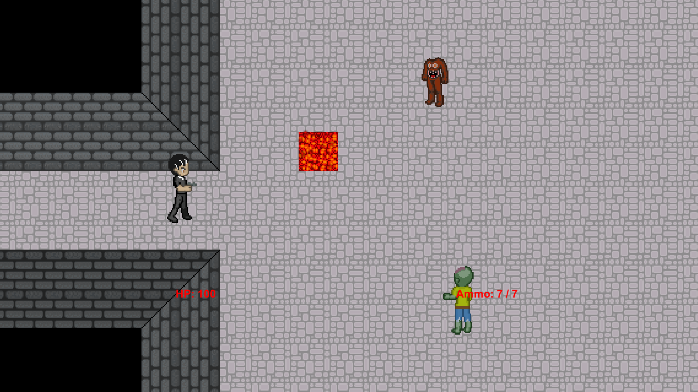

Escape From Purgatory is a group project that I helped create with three other students during one of my college courses. It is a top-down dungeon crawler with roguelike elements, set in a imaginative, purgatory setting. We take control of Jimmy, a member of the Avenicci crime family, who subsequently fell into a coma after crossing his bosses. Now he must fight his way out of his own form of purgatory, defeating different kinds of monstrosities as he goes.
The game is 2D in nature with hand-made assets created in-house. The sounds are royalty-free, with the music being composed in house as well.
A central figure within the game is the Ferryman. His role as the curator for the River Styx is to provide the player a means of returning to the game after having fallen in battle. Each time they choose to, they spend one gold talisman in exchange. They can also choose to forfeit their attempts and end the game prematurely.
Programming
Shader effects
Music production